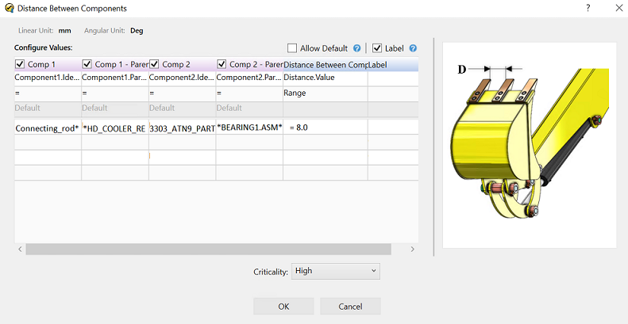
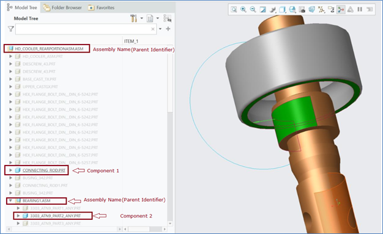
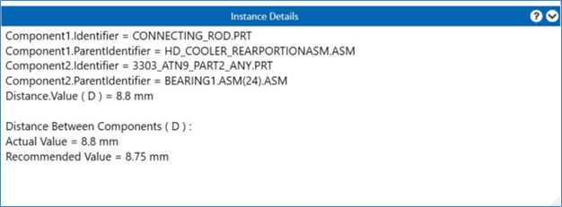
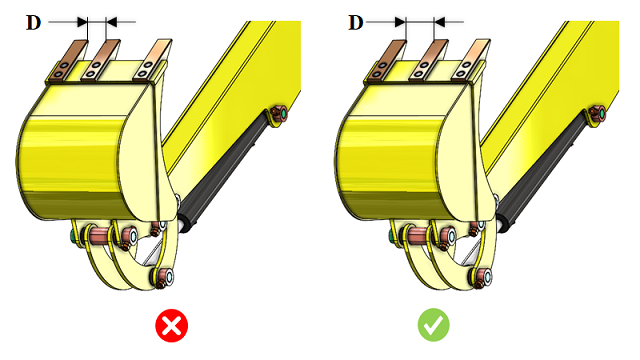

2 つのコンポーネント間の距離計算は汎用的なチェックであり、このルールでは 2 つのコンポーネント間の最小距離をチェックします。
2 つのコンポーネント間の距離計算は汎用的なチェックであり、このルールでは 2 つのコンポーネント間の最小距離をチェックします。これらのチェックは、組立標準、組立性設計（Design for Assembly）ガイドライン、または安全上の観点に関連しており、コンポーネント間に特定の距離を維持する必要がある場合に用いられます。ルール構成では、正確な距離、最小距離、最大距離、または距離範囲など、さまざまな条件で距離計算を構成するオプションが提供されます。
ルール構成では、コンポーネント識別子およびコンポーネント親識別子を設定します（コンポーネント親識別子とは、アセンブリ内でのコンポーネントの位置、すなわち次レベルのアセンブリ名を意味します）。以下の情報は、正しいコンポーネントとそのアセンブリ内での位置を特定するのに役立ちます。
以下のルール構成では、ユーザーは component1.identifier および component1.Parentidentifier を定義する必要があります。同様の方法で component 2 を構成できます。
この構成により、特定のサブアセンブリ／アセンブリの特定セクション内に存在する特定のコンポーネント間の距離をチェックできます。
例：以下のアセンブリでは、ユーザーは DFMPro 設定 ダイアログボックスでコンポーネントのファイル名を構成しています。
component1.Identifier = connecting_rod
component1.Parentidentifier = HD_Cooler_RearPC.ASM
component2.Identifier = 3303_ATN9_PART
component2.Parentidentifier = BEARING1.ASM

コンポーネントのファイルとその親アセンブリ名のルールに基づき、このルールは設定された値に対して最小距離を検証します。


注記:
組織は、DFMPro 設定ファイルを通じて、コンポーネント識別子をコンポーネントの「FileName」または「Attribute/Parameter Name」として設定できます。詳細については、DFMPro 設定 を参照してください。

D = コンポーネント間の距離
注記:
このルールは、トップレベルのアセンブリ部品に対して、DFMPro 設定に基づいて実行できます。